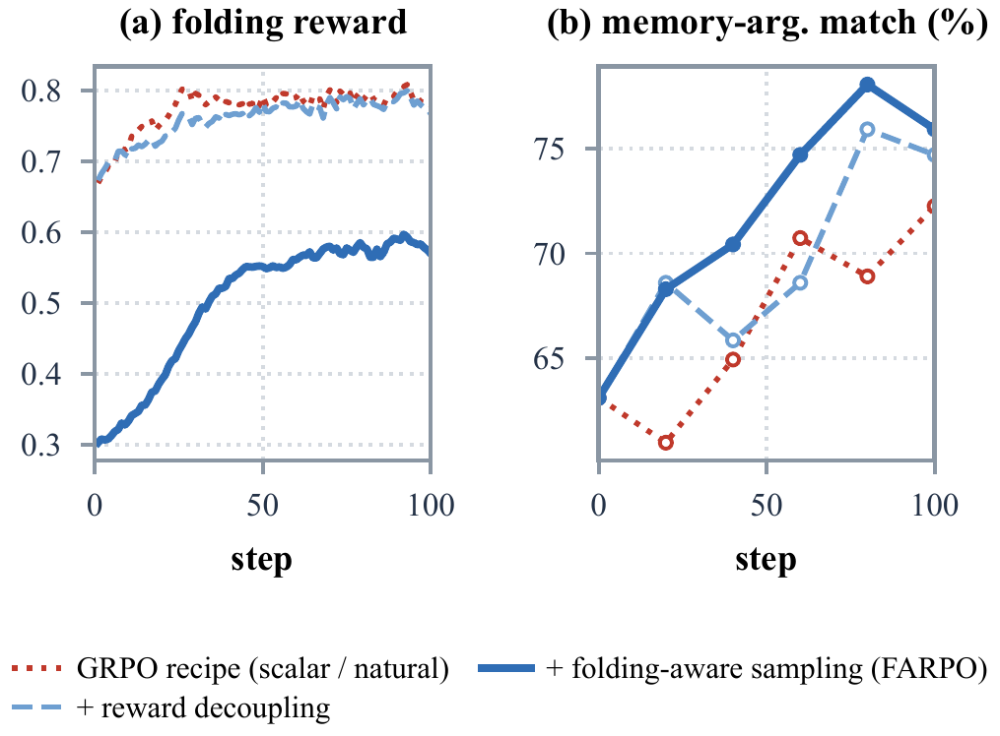

Reward-decoupled group advantages
Each verifier component is centred and scaled within its prompt group, gated when its group variance is
zero, and only then weighted (w = 0.1 / 0.4 / 0.4 / 0.1 for format, type, parameters, folding).
A one-standard-deviation change in any component moves the advantage by the same amount, which the
scalar recipe does not guarantee. Added to the GRPO recipe on the same natural corpus, it gives +6.2 Pass@3
and +2.8 IRR, and memory-argument match on the held-out states rises stepwise along the ladder
(63.1 → 72.3 → 74.7 → 75.9).

Folding-aware sampling
Span folds are rare and step folds are already solved by the SFT policy, so under natural sampling the
share of prompt groups with zero advantage grows from 25–33% to 62–77% over an epoch; with
ρ = 9 it stays at 13–15%. The deep-fold rate on held-out states shows the two modes:
natural corpora drive it to 0.2%, folding-aware corpora above 90%. At deployment MemGUI-8B-RL folds
about 22 steps per span (SFT: 11) and writes 1.69 memory entries per attempt (SFT: 1.26).